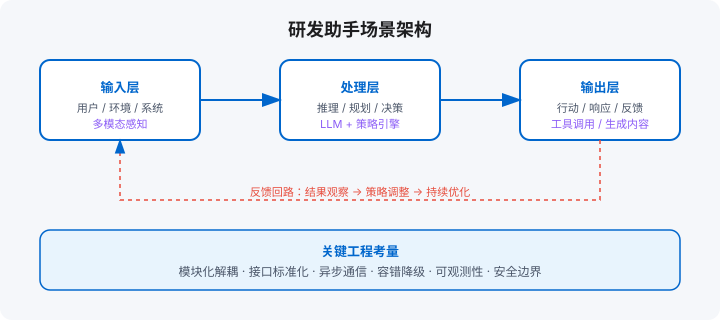

场景一：研发助手（代码级 Agent）
阅读代码库 / 定位 bug / 生成 PR / 只读与写权限分离
学习目标
- 理解 Agentic Coding 的四级范式与自主代理的工作循环
- 为 Coding Agent 设计「测试即验证器」的闭环
- 区分 Coding Agent 与通用 Agent 的能力分工
章节地图：15.1 需求 → 15.2 工具 → 15.3 记忆 → 15.4 安全 → 15.5 Agentic Coding 范式 → 15.6 代码作为工具 → 本章产出。

15.1 需求：阅读代码库、定位 bug、生成 PR
研发助手是最典型的 Agent 落地场景。用户自然语言需求如：
- 「找出用户登录失败的所有可能原因」
- 「这段代码有没有内存泄漏风险？」
- 「帮我重构这个函数，保留原有逻辑」
- 「根据这个 issue 生成一个 PR，包含测试」
Agent 需要的能力：代码搜索（ripgrep / AST）、文件读取、静态分析、测试运行、Git 操作。
15.2 工具：代码搜索、AST 解析、测试运行
研发助手的核心工具栈：
- 代码搜索：ripgrep 或 OpenGrep，支持正则、符号搜索。
- AST 解析：Tree-sitter（多语言统一）或语言专属解析器（如 Python 的 ast、JS 的 babel parser）。用于理解代码结构，而非字符串匹配。
- 测试运行：pytest / jest / go test 等，Agent 根据修改自动运行相关测试。
- Git 操作：读取 diff、创建 branch、提交、开 PR。只允许操作指定仓库，禁止 force push。
15.3 记忆：项目结构理解、历史 PR 回顾
研发助手需要「记住」项目上下文：
- 项目结构记忆：把目录树、核心模块、入口文件持久化，避免每次都重新扫描。
- 历史 PR 回顾：把过去 N 个 PR 的 diff 和 review 评论向量化，遇到类似问题时先参考历史决策。
- 用户偏好：记录用户习惯的代码风格、命名规范、测试框架，生成个性化代码。
15.4 安全：只读 vs 写权限分离
研发助手的权限控制是红线：
- 只读模式（默认）：Agent 可以搜索、阅读、分析，但不能改文件、不能提交。
- 写模式（人工触发）：用户明确说「帮我改」后，Agent 才获得写权限，且每次写操作都要在 PR 中展示，等待用户确认。
- 审计：所有文件修改记录 diff，与 Git commit 绑定，可追溯。
15.5 Agentic Coding：从补全到自主代理
研发助手是 Agent 落地最深的场景，它的演进路径几乎就是「人机协作自主度」的完整光谱：
| 范式 | 交互 | 人的角色 | 代表 |
|---|---|---|---|
| L1 代码补全 | Tab 补全一行 | 驾驶员 | GitHub Copilot 补全 |
| L2 对话式编程 | 问答 + 生成函数 | 审查者 | ChatGPT / Copilot Chat |
| L3 任务代理 | 「修复这个 issue」，Agent 读代码、改文件、跑测试、提 PR | 验收者 | Claude Code / Devin / Cursor Agent |
| L4 多代理研发 | 角色分工：架构 / 编码 / 测试 / 评审 | 技术负责人 | 实验阶段 |
L3 的工作循环本质上是第 5 章 ReAct 的领域化：读代码（观察）→ 形成假设（思考）→ 编辑（行动）→ 跑测试（验证）→ 看报错（新观察）。与通用 Agent 相比，Coding Agent 有一个决定性优势：验证器是现成的——编译器、测试、linter 都是确定性裁判。这解释了为什么编程是 Agent 最早成功的领域：不是模型更懂代码，是这个领域的「对错」可以被便宜地判定。
三个工程要点：① 上下文选择决定上限——相关的文件和符号找齐了，任务就成了一半；② 小步提交——每步改动可独立回滚，避免一次改错十处；③ diff 审查必须留给人的最终确认，PR 描述要写清「改了什么、为什么、影响哪些测试」。
15.6 Coding Agent 与通用 Agent：代码作为工具
第二本书的视角很犀利：代码是 Agent 的「元工具」——一个通用 Agent 如果会写代码并执行，它就能在运行时「发明」新工具，动作空间不再受预定义注册表限制。
| 形态 | 动作空间来源 | 优势 | 风险 |
|---|---|---|---|
| 预定义工具 | 注册表里的固定 API | 可控、可审计 | 覆盖长尾任务能力有限 |
| Coding Agent（代码即工具） | 动态生成并执行脚本 | 能力上限 = 代码的表达力 | 执行安全、幻觉代码、审计难度 |
工程取舍：「预定义工具处理 90% 高频请求 + 代码执行兜底长尾」是最稳的混合架构。代码执行必须配 13.3 节的沙箱、超时和资源限额，产物要留档可审计。通用 Agent 产品（如 Manus）正是靠「虚拟机 + 文件系统 + 代码执行」三件套，把 Deep Research、Coding、Computer Use 三条路线的能力并集装进一个产品的。
动手实验
- 用 15.5 节表格给你团队的工具定位：现在处在 L1–L4 哪一级？下一步升一级的前提条件是什么？
- 给你的 Coding Agent 写一个「测试即验证器」的最小闭环：改完自动跑测试，失败把报错摘要回填给 Agent。
- 设计「预定义工具 + 代码兜底」的混合架构：列出 5 个高频预定义工具，其余交给沙箱代码执行。
AI 编程工具：Agent 最早规模化的战场
编程之所以成为 Agent 第一个真正规模化的领域，靠的不是模型会写代码，而是代码有现成的自动验证器——编译器、测试、类型检查、lint。Agent 写完代码，测试一跑就知道对不对，反馈回路是毫秒级且客观的。这也解释了为什么通用 Agent 更难：没有验证器的领域，Agent 连「自己做完了没有」都不知道。
实践层面，把 Claude Code / Cursor 这类工具用好， patterns 高度一致：
- 给地图，不给指令：让 Agent 先读 README 和目录结构再动手，比一句「修复 bug」有效十倍。上下文里有仓库地图，它就不用瞎猜架构。
- Skills / 规则文件沉淀团队知识：把「我们提交前必须跑哪些检查」「API 返回体统一包 ApiResponse」这类规范写成项目级规则文件（如 CLAUDE.md / .cursor/rules），让 Agent 每次自动带上——这是把个人经验资产化成团队基础设施的过程，也是第 4 章 Agent Skills 模式在编程场景的具体形态。
- 小步提交，验证后合并：每个改动都按「改完 → 跑测试 → 看 diff → 提交」的小循环走。让 Agent 一次性扛 10 个文件的改动，出问题你根本没法 review。
- 危险操作必须人审：删文件、改数据库 schema、push 代码——这三个动作永远挂人工确认，对应第 11 章的 danger_level 分级。
反模式提醒：① 别让 Agent 在没跑通测试的仓库里改代码——先确保测试基线是绿的，否则你分不清是谁弄坏的；② 别把 API Key 写进它生成的项目文件；③ 长时间任务（重构、迁移）一定要它定期汇报进度，别闷头跑 40 分钟最后交个跑不起来的东西。
本章产出：研发助手的工具注册表与权限控制器（双语言）
以下示例展示研发助手的核心工具注册和只读/写权限检查。
Python 版本
"""
研发助手（代码级 Agent）工具注册与权限控制 —— Python
"""
from __future__ import annotations
import re
from dataclasses import dataclass
from typing import Any
@dataclass
class Permission:
read: bool = True
write: bool = False
git_push: bool = False
class PermissionDenied(Exception): pass
class DevAgent:
def __init__(self):
self._perm = Permission()
self._readonly_tools = {"search_code", "read_file", "ast_parse", "run_test"}
self._write_tools = {"write_file", "git_commit", "create_pr"}
def set_permission(self, read: bool = True, write: bool = False, git_push: bool = False):
self._perm = Permission(read, write, git_push)
def check(self, tool: str):
if tool in self._write_tools and not self._perm.write:
raise PermissionDenied(f"工具 {tool} 需要写权限，当前为只读模式")
if tool == "git_push" and not self._perm.git_push:
raise PermissionDenied("git push 需要单独授权")
# ---- 工具实现 ----
def search_code(self, pattern: str, path: str = ".") -> list[str]:
self.check("search_code")
# 实际接 ripgrep；这里返回模拟
return [f"{path}/src/main.py", f"{path}/src/utils.py"]
def read_file(self, path: str) -> str:
self.check("read_file")
return f"# {path} 的内容\nprint('hello')"
def ast_parse(self, path: str) -> dict:
self.check("ast_parse")
return {"type": "Module", "functions": ["main", "helper"]}
def run_test(self, path: str) -> dict:
self.check("run_test")
return {"passed": 3, "failed": 0}
def write_file(self, path: str, content: str):
self.check("write_file")
with open(f"/tmp/{path}", "w") as f:
f.write(content)
return {"status": "written", "path": path}
def git_commit(self, message: str):
self.check("git_commit")
return {"status": "committed", "message": message}
def create_pr(self, title: str):
self.check("create_pr")
return {"status": "opened", "url": f"https://github.com/example/repo/pull/1"}
# 使用示例
if __name__ == "__main__":
agent = DevAgent()
print("只读模式：")
print("搜索:", agent.search_code("def main"))
print("读文件:", agent.read_file("main.py")[:40])
try:
agent.write_file("main.py", "new content")
except PermissionDenied as e:
print("写操作被拒:", e)
agent.set_permission(write=True)
print("\n写模式：")
print("写文件:", agent.write_file("main.py", "new content"))TypeScript 版本
/**
研发助手（代码级 Agent）工具注册与权限控制 —— TypeScript
*/
class PermissionDenied extends Error {
constructor(msg: string) { super(msg); }
}
interface Permission { read: boolean; write: boolean; gitPush: boolean; }
class DevAgent {
private perm: Permission = { read: true, write: false, gitPush: false };
private readonlyTools = new Set(["search_code", "read_file", "ast_parse", "run_test"]);
private writeTools = new Set(["write_file", "git_commit", "create_pr"]);
setPermission(read = true, write = false, gitPush = false) {
this.perm = { read, write, gitPush };
}
private check(tool: string) {
if (this.writeTools.has(tool) && !this.perm.write) throw new PermissionDenied(`工具 ${tool} 需要写权限，当前为只读模式`);
if (tool === "git_push" && !this.perm.gitPush) throw new PermissionDenied("git push 需要单独授权");
}
searchCode(pattern: string, path = "."): string[] {
this.check("search_code");
return [`${path}/src/main.ts`, `${path}/src/utils.ts`];
}
readFile(path: string): string { this.check("read_file"); return `# ${path}\nconsole.log("hello");`; }
astParse(path: string): Record { this.check("ast_parse"); return { type: "Program", functions: ["main", "helper"] }; }
runTest(path: string): Record { this.check("run_test"); return { passed: 3, failed: 0 }; }
writeFile(path: string, content: string): Record {
this.check("write_file"); return { status: "written", path };
}
gitCommit(message: string): Record { this.check("git_commit"); return { status: "committed", message }; }
createPR(title: string): Record {
this.check("create_pr"); return { status: "opened", url: `https://github.com/example/repo/pull/1` };
}
}
// 使用示例
const agent = new DevAgent();
console.log("只读搜索:", agent.searchCode("function main"));
try { agent.writeFile("main.ts", "new"); } catch (e: any) { console.log("写操作被拒:", e.message); }
agent.setPermission(true, true);
console.log("写模式写入:", agent.writeFile("main.ts", "new")); 本章产出
- 研发助手的核心工具栈（代码搜索 / AST / 测试 / Git）。
- 只读/写权限分离的控制器，危险操作强制人工授权。
- 记忆策略：项目结构缓存 + 历史 PR 向量化 + 用户偏好。